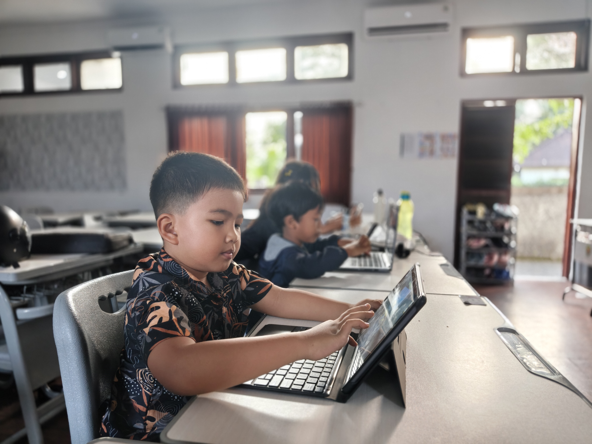

OPSI D — BENTO GRID DENGAN FOTO KELAS
Investasi Masa Depan Anak
Bukan hanya belajar coding.
Anak belajar berpikir, mencoba, & berkarya.
 Kreator Aktif
Kreator Aktif
Kreatif Membuat Project
Screen-time pasif berubah jadi waktu berkarya. Anak mendesain karakter, jalan cerita, dan aturan permainannya sendiri.
Logika
Berpikir Logis
Masalah besar dipecah jadi langkah teratur.
masalah
langkah
solusi
Growth Mindset
Problem Solving & Tangguh
Tidak takut error, tidak mudah menyerah.
✗ error → ✓ fixed

Show & Tell
Percaya Diri Presentasi
Setiap akhir proyek, anak mempresentasikan karyanya di depan tutor & teman.
Portofolio Nyata
Portofolio Digital & Sertifikat
Bukti nyata kompetensi anak untuk sekolah & jenjang berikutnya.
🎮 Game
🌐 Website
📱 Aplikasi
🏅 Sertifikat